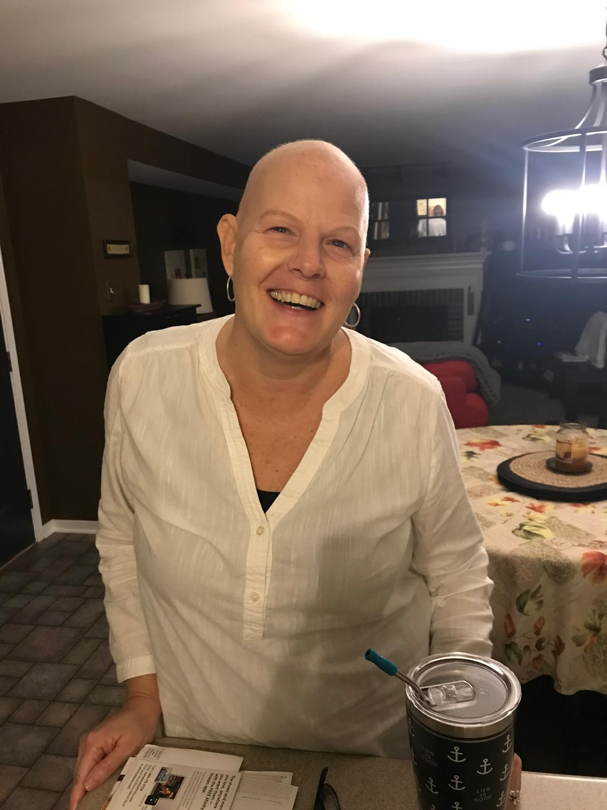
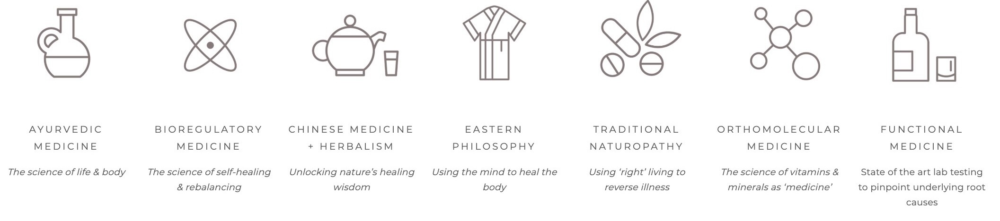

As an Integrative Health Practitioner, I am part of a global community dedicated to uncovering the root causes of discomfort and imbalance in the body. My mission is to empower individuals to achieve lasting wellness by addressing underlying factors, helping them lose weight, regain energy, and truly thrive. IHPs focus on healing the whole person through a comprehensive, integrative approach that supports overall well-being and seeks to empower individuals to take control of their health through gentle behavioral changes.
I hold Integrative Health Practitioner Certification and an Integrative Health Practitioner’s Weight Loss Specialty badge from the Integrative Health Practitioner Institute, Group Fitness Certification (ACE), Barre Certification (Barre Intensity) and a PhD in 20th Century French Literature. Those areas of expertise are not unrelated, as it was through my yearly travels to France that I grew to admire holistic approaches to health.
I am a wife and mother: I have been married to Glenn for 31 years and counting, and I am the mother of two incredible young men: Nathaniel and Isaiah. I live and practice in Conway, AR.

My practice is dedicated to Glenn, Nathaniel, and Isaiah, who make a long and healthy life my dearest aspiration; and to my sister, Tina, who in saving her own life, also saved mine. And a special thank you goes to my Mom, JoAnn Hedrick, who helped make my dream of becoming an IHP a reality.
My sister Tina’s diagnosis and successful battle against cancer in 2020—coupled with the global pandemic of the same year—inspired me to:
My wellness practice approaches clients holistically in order to encourage habits that develop balance in all its forms: physical, mental, emotional, and social. Centered on the client’s well-being, my practice is sensitive to each individual’s resources, their personal history, and their behaviors, such as how a client eats, how they do or do not exert themselves physically through exercise, how they manage stress, and how they interact relationally.
This holistic preventative approach combines the healing traditions of:
